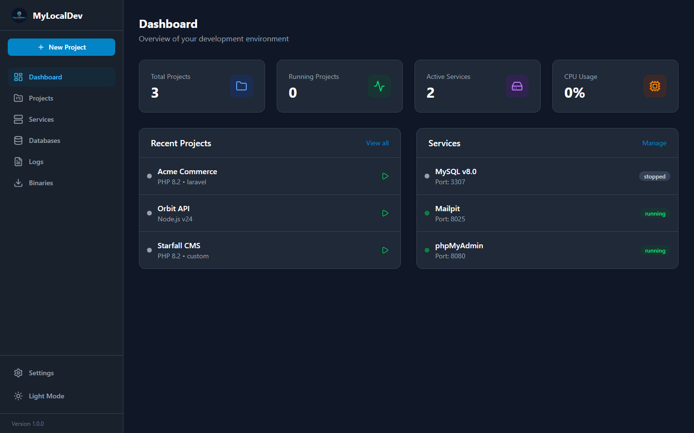
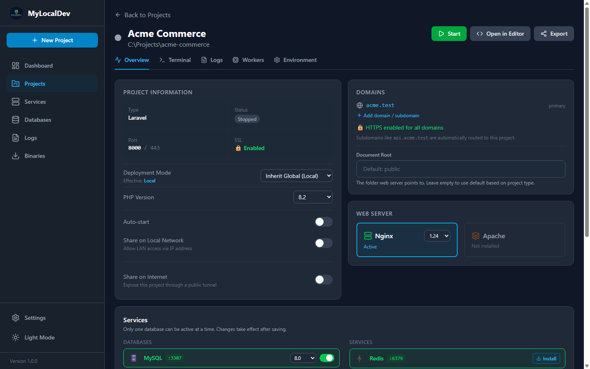
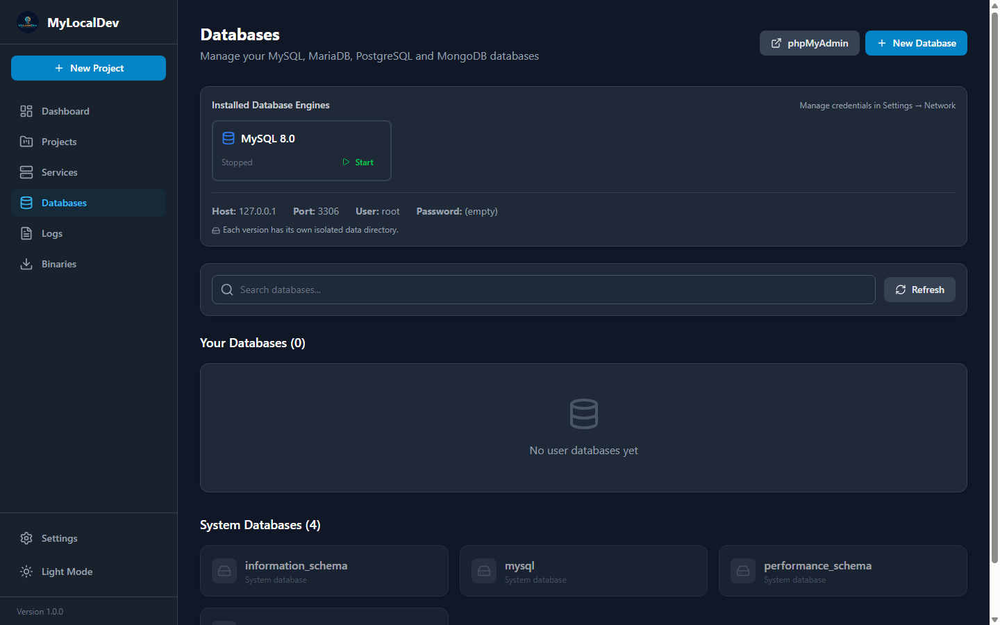
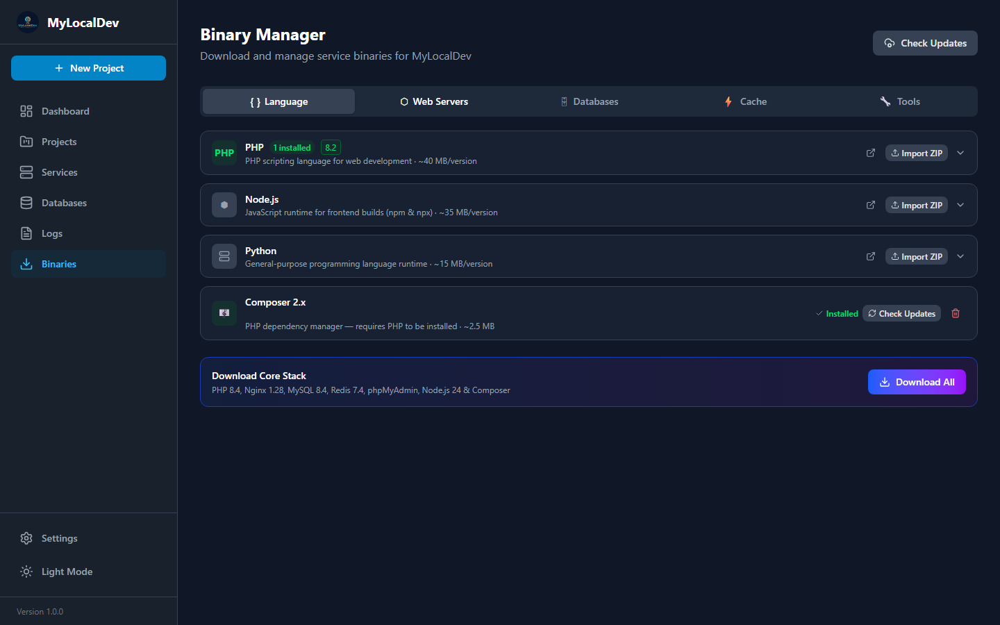

◈
One version per project
Pin PHP 7.4 to the legacy app and 8.5 to the rewrite. Both stay running; neither notices the other.
- Per-project PHP, Node and database
- Isolated data directories
- No global version switching
MyLocalDev keeps PHP, Node, databases and web servers apart per project — so a legacy 7.4 app and a brand-new 8.5 build can share one machine without touching each other.
Free and open source. No account, no telemetry, no Docker.

Old client sites, new greenfield builds, a frontend in Node behind a backend in PHP — all at once, each on its own version.
Pin PHP 7.4 to the legacy app and 8.5 to the rewrite. Both stay running; neither notices the other.
Projects answer on name.test with certificates your browser already trusts.
MySQL, MariaDB, PostgreSQL, MongoDB, Redis, Mailpit, MinIO and phpMyAdmin come from one screen.

Open a project and see exactly what it runs on: PHP build, web server, database, domain, certificate state and the services it depends on. Change any of it without hunting through config files.
Every engine gets its own versioned data directory, so MySQL 5.7 and 8.4 can coexist for the two projects that demand them. Import a dump, export one, or browse tables in phpMyAdmin — no external client needed.


Nothing is preinstalled and nothing hides in Program Files. Pick a version, let MyLocalDev fetch it, and it stays contained in one folder you can delete later.
Point a proxy at your dev server and the Node app gets the same .test domain as everything else.
Switch a project to production mode for OPcache, hardened headers and extra workers before it leaves your machine.
Run Laravel queues with crash-loop protection, restart backoff and per-worker logs that stay readable.
Register a Windows scheduled task for artisan schedule:run and let it tick every minute without a console window.
Expose one project through a Cloudflare tunnel or zrok when a client needs to see it — then close it again.
php, composer, npm and mysql resolve to the version of the folder you're in.
Grab the setup or the portable build. Nothing else is required — runtimes are downloaded from inside MyLocalDev.
Create a new app or point MyLocalDev at a folder you already work in. It reads .env instead of overwriting it.
Start the project, visit your-project.test, and get to work. Services start only when you need them.
Keep your current machine set up. MyLocalDev installs side by side, so you can compare before you commit.